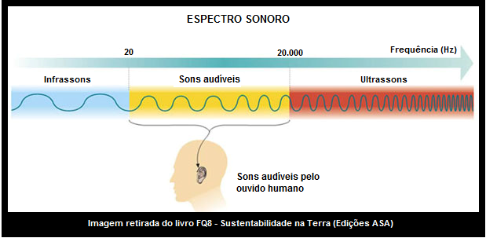

Sumário
Acústica
As ondas sonoras se propagam através de compressões e rarefações das camadas de ar. Elas são classificadas como mecânicas,
tridimensionais e longitudinais (em meios fluidos) ou transversais (em meios sólidos) e podem ser produzidas por meio de cordas,
membranas e camadas de ar.
As ondas sonoras podem variar de acordo com a sua frequência, formando o espectro sonoro, que identifica inclusive as
ondas sonoras audíveis aos seres humanos:

Representação do Espectro Sonoro - Link da imagem
Como podemos ver acima, o ser humano consegue escutar as ondas sonoras com frequência entre 20 (com o comprimento de onda de aproximadamente 17m) e 20000 Hz (com o comprimento de onda de aproximadamente 17mm). Todas as ondas inferiores a este intervalo são denominadas infrassom e todas as superiores são denominadas ultrassom.
Dentro da frequência audível aos seres humanos, conseguimos identificar características fisiológicas do som. São elas:
- Altura: depende da frequência da onda. Sons graves são mais baixos, pois possuem frequência menor, assim como sons agudos são mais altos, pois possuem frequência maior.
- Intensidade: depende da amplitude da onda, e é medida normalmente em bel (B) ou decibéis (dB). Quanto maior a intensidade, mais incômodo é aos ouvidos e mais próximo do rompimento do tímpano e da surdez o indivíduo se encontra.
- Timbre: esta característica consegue distinguir o som que representa de algum outro emitido por outras fontes sonoras, mesmo que estejam em mesma altura e intensidade. Esta característica diferencia vozes de pessoas diferentes, por exemplo.
A velocidade do som no ar seco é de 340 m/s, mas pode variar de acordo com o meio. Na água, por exemplo, ela passa a ser de 1500 m/s, no aço, 5000 m/s e no vácuo ela não se propaga.
Você sabia que o som pode se refletir? Afinal, ele sofre o fenômeno da reflexão, já visto no tópico anterior. Podem existir 3 tipos de reflexão do som. São eles:
- Eco: ao ser refletido, chega a mais de 0,1s após o som direto ter atingido o observador.
- Reverberação: ao ser refletido, chega a menos de 0,1s após o som direto ter atingido o observador.
- Reforço: ao ser refletido, chega quase simultaneamente ao som direto atingido ao observador.
RESUMÃO
Chegou a hora de fazer o Resumão! Para isso, aqui vão algumas dicas para você fazer o seu de forma completa e saber tudo sobre Acústica:
- Acredite: você já sabe de todos estes conceitos se estudou tudo sobre ondulatória até aqui. Esta é apenas uma síntese voltada às ondas sonoras.
- Você pode associar as características fisiológicas do som com as músicas e vozes. Comece a associar tons graves e agudos, vozes femininas e masculinas, efeitos de áudio, entre outros, com os conceitos acústicos.
- A produção de pequenos desenhos e gráficos pode exemplificar todas as informações de ondas sonoras, tente produzir alguns por conta própria.
- A utilização de uma escrita colorida em resumos também auxilia bastante ao realçar e destacar as informações mais importantes de um tópico.
Refêrencias
PIETROCOLA, Maurício; POGIBIN, Alexander; ANDRADE, Renata; ROMERO, Talita Raquel. Física: Em Contextos. 1. ed. São Paulo: Editora do Brasil, 2016. 288 p.